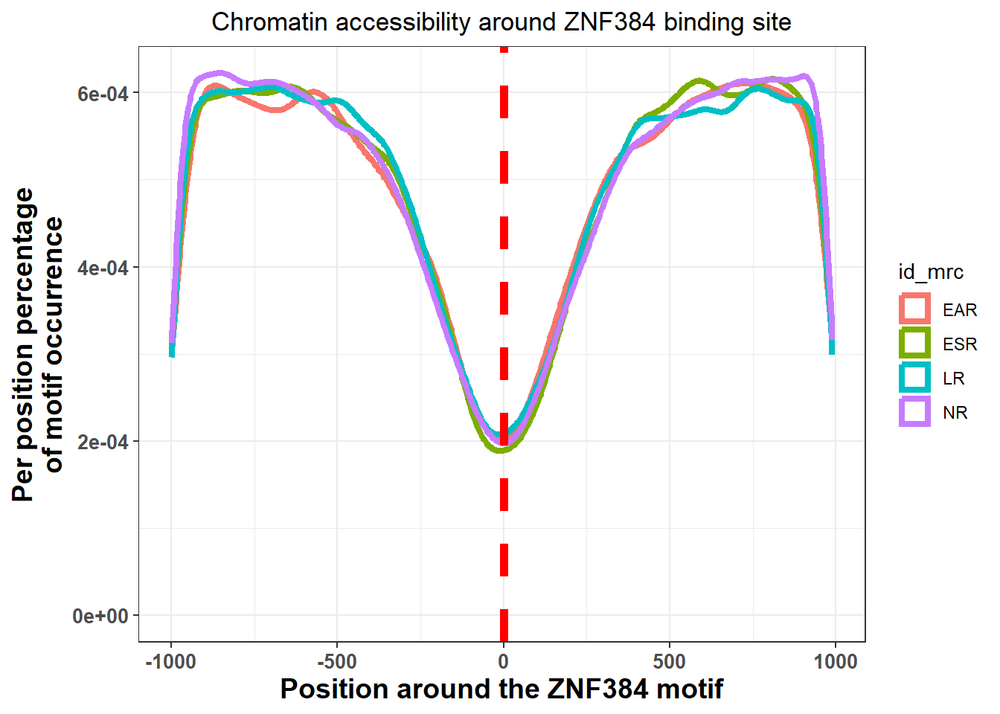
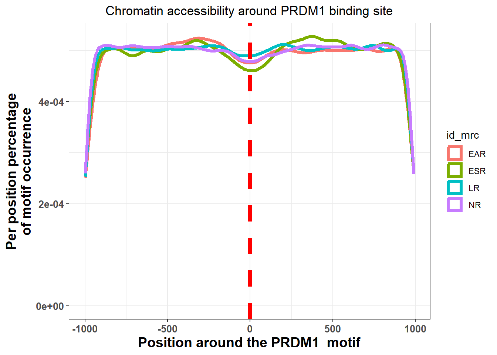
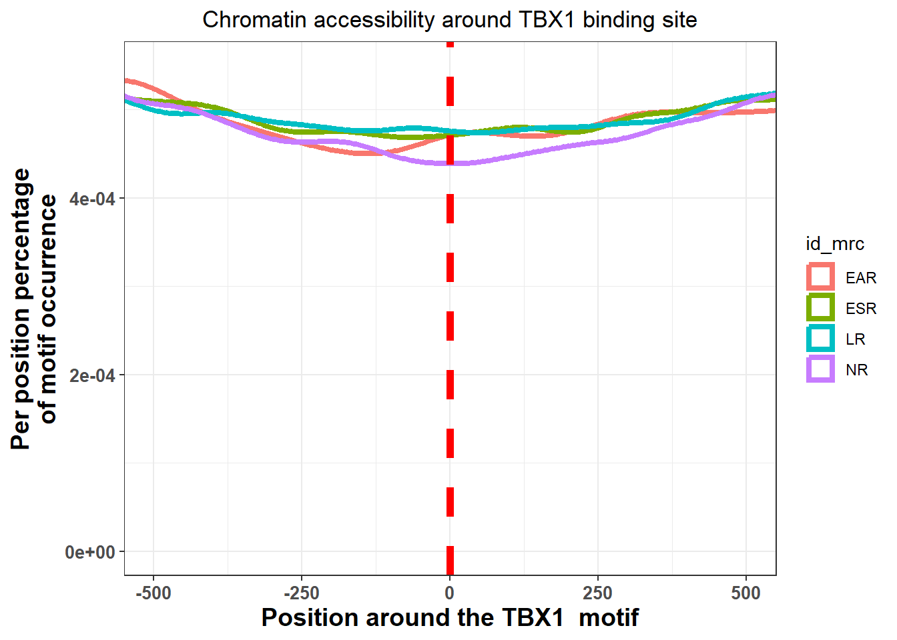

Jaspar_enrichment
ERM
2024-06-13
Last updated: 2024-06-13
Checks: 7 0
Knit directory: ATAC_learning/
This reproducible R Markdown analysis was created with workflowr (version 1.7.1). The Checks tab describes the reproducibility checks that were applied when the results were created. The Past versions tab lists the development history.
Great! Since the R Markdown file has been committed to the Git repository, you know the exact version of the code that produced these results.
Great job! The global environment was empty. Objects defined in the global environment can affect the analysis in your R Markdown file in unknown ways. For reproduciblity it’s best to always run the code in an empty environment.
The command set.seed(20231016) was run prior to running
the code in the R Markdown file. Setting a seed ensures that any results
that rely on randomness, e.g. subsampling or permutations, are
reproducible.
Great job! Recording the operating system, R version, and package versions is critical for reproducibility.
Nice! There were no cached chunks for this analysis, so you can be confident that you successfully produced the results during this run.
Great job! Using relative paths to the files within your workflowr project makes it easier to run your code on other machines.
Great! You are using Git for version control. Tracking code development and connecting the code version to the results is critical for reproducibility.
The results in this page were generated with repository version 3f7e1eb. See the Past versions tab to see a history of the changes made to the R Markdown and HTML files.
Note that you need to be careful to ensure that all relevant files for
the analysis have been committed to Git prior to generating the results
(you can use wflow_publish or
wflow_git_commit). workflowr only checks the R Markdown
file, but you know if there are other scripts or data files that it
depends on. Below is the status of the Git repository when the results
were generated:
Ignored files:
Ignored: .RData
Ignored: .Rhistory
Ignored: .Rproj.user/
Ignored: analysis/figure/
Ignored: data/ARR_SNP_table.csv
Ignored: data/All_merged_peaks.tsv
Ignored: data/CAD_gwas_dataframe.RDS
Ignored: data/Collapsed_expressed_NG_peak_table.csv
Ignored: data/DEG_toplist_sep_n45.RDS
Ignored: data/FRiP_first_run.txt
Ignored: data/Frip_1_reads.csv
Ignored: data/Frip_2_reads.csv
Ignored: data/Frip_3_reads.csv
Ignored: data/Frip_4_reads.csv
Ignored: data/Frip_5_reads.csv
Ignored: data/Frip_6_reads.csv
Ignored: data/GO_KEGG_analysis/
Ignored: data/HF_SNP_table.csv
Ignored: data/Ind1_75DA24h_dedup_peaks.csv
Ignored: data/Ind1_TSS_peaks.RDS
Ignored: data/Ind1_firstfragment_files.txt
Ignored: data/Ind1_fragment_files.txt
Ignored: data/Ind1_peaks_list.RDS
Ignored: data/Ind1_summary.txt
Ignored: data/Ind2_TSS_peaks.RDS
Ignored: data/Ind2_fragment_files.txt
Ignored: data/Ind2_peaks_list.RDS
Ignored: data/Ind2_summary.txt
Ignored: data/Ind3_TSS_peaks.RDS
Ignored: data/Ind3_fragment_files.txt
Ignored: data/Ind3_peaks_list.RDS
Ignored: data/Ind3_summary.txt
Ignored: data/Ind4_79B24h_dedup_peaks.csv
Ignored: data/Ind4_TSS_peaks.RDS
Ignored: data/Ind4_V24h_fraglength.txt
Ignored: data/Ind4_fragment_files.txt
Ignored: data/Ind4_fragment_filesN.txt
Ignored: data/Ind4_peaks_list.RDS
Ignored: data/Ind4_summary.txt
Ignored: data/Ind5_TSS_peaks.RDS
Ignored: data/Ind5_fragment_files.txt
Ignored: data/Ind5_fragment_filesN.txt
Ignored: data/Ind5_peaks_list.RDS
Ignored: data/Ind5_summary.txt
Ignored: data/Ind6_TSS_peaks.RDS
Ignored: data/Ind6_fragment_files.txt
Ignored: data/Ind6_peaks_list.RDS
Ignored: data/Ind6_summary.txt
Ignored: data/Knowles_4.RDS
Ignored: data/Knowles_5.RDS
Ignored: data/Knowles_6.RDS
Ignored: data/MI_gwas.RDS
Ignored: data/SNP_supp_schneider.RDS
Ignored: data/all_TSSE_scores.RDS
Ignored: data/aln_run1_results.txt
Ignored: data/anno_ind1_DA24h.RDS
Ignored: data/anno_ind4_V24h.RDS
Ignored: data/background_n45_he_peaks.RDS
Ignored: data/cardiac_muscle_FRIP.csv
Ignored: data/cardiomyocyte_FRIP.csv
Ignored: data/col_ng_peak.csv
Ignored: data/cormotif_full_4_run.RDS
Ignored: data/cormotif_full_4_run_he.RDS
Ignored: data/cormotif_full_6_run.RDS
Ignored: data/cormotif_full_6_run_he.RDS
Ignored: data/cormotif_probability_45_list.csv
Ignored: data/cormotif_probability_45_list_he.csv
Ignored: data/cormotif_probability_all_6_list.csv
Ignored: data/cormotif_probability_all_6_list_he.csv
Ignored: data/embryo_heart_FRIP.csv
Ignored: data/enhancer_list_ENCFF126UHK.bed
Ignored: data/enhancerdata/
Ignored: data/filt_Peaks_efit2.RDS
Ignored: data/filt_Peaks_efit2_bl.RDS
Ignored: data/filt_Peaks_efit2_n45.RDS
Ignored: data/first_Peaksummarycounts.csv
Ignored: data/first_run_frag_counts.txt
Ignored: data/full_bedfiles/
Ignored: data/gene_ref.csv
Ignored: data/gwas_1_dataframe.RDS
Ignored: data/gwas_2_dataframe.RDS
Ignored: data/gwas_3_dataframe.RDS
Ignored: data/gwas_4_dataframe.RDS
Ignored: data/gwas_5_dataframe.RDS
Ignored: data/high_conf_peak_counts.csv
Ignored: data/high_conf_peak_counts.txt
Ignored: data/high_conf_peaks_bl_counts.txt
Ignored: data/high_conf_peaks_counts.txt
Ignored: data/hits_files/
Ignored: data/ind1_DA24hpeaks.RDS
Ignored: data/ind1_TSSE.RDS
Ignored: data/ind2_TSSE.RDS
Ignored: data/ind3_TSSE.RDS
Ignored: data/ind4_TSSE.RDS
Ignored: data/ind4_V24hpeaks.RDS
Ignored: data/ind5_TSSE.RDS
Ignored: data/ind6_TSSE.RDS
Ignored: data/initial_complete_stats_run1.txt
Ignored: data/left_ventricle_FRIP.csv
Ignored: data/mergedPeads.gff
Ignored: data/mergedPeaks.gff
Ignored: data/motif_list_full
Ignored: data/motif_list_n45
Ignored: data/motif_list_n45.RDS
Ignored: data/multiqc_fastqc_run1.txt
Ignored: data/multiqc_fastqc_run2.txt
Ignored: data/multiqc_genestat_run1.txt
Ignored: data/multiqc_genestat_run2.txt
Ignored: data/my_hc_filt_counts.RDS
Ignored: data/my_hc_filt_counts_n45.RDS
Ignored: data/n45_bedfiles/
Ignored: data/n45_files
Ignored: data/other_papers/
Ignored: data/peakAnnoList_1.RDS
Ignored: data/peakAnnoList_2.RDS
Ignored: data/peakAnnoList_24_full.RDS
Ignored: data/peakAnnoList_24_n45.RDS
Ignored: data/peakAnnoList_3.RDS
Ignored: data/peakAnnoList_3_full.RDS
Ignored: data/peakAnnoList_3_n45.RDS
Ignored: data/peakAnnoList_4.RDS
Ignored: data/peakAnnoList_5.RDS
Ignored: data/peakAnnoList_6.RDS
Ignored: data/peakAnnoList_full_motif.RDS
Ignored: data/peakAnnoList_n45_motif.RDS
Ignored: data/siglist_full.RDS
Ignored: data/siglist_n45.RDS
Ignored: data/test.list.RDS
Ignored: data/testnames.txt
Ignored: data/toplist_6.RDS
Ignored: data/toplist_full.RDS
Ignored: data/toplist_full_DAR_6.RDS
Ignored: data/toplist_n45.RDS
Ignored: data/trimmed_seq_length.csv
Ignored: data/unclassified_full_set_peaks.RDS
Ignored: data/unclassified_n45_set_peaks.RDS
Ignored: data/xstreme/
Ignored: trimmed_Ind1_75DA24h_S7.nodup.splited.bam/
Untracked files:
Untracked: EAR_2_plot.pdf
Untracked: ESR_1_plot.pdf
Untracked: Firstcorr plotATAC.pdf
Untracked: IND1_2_3_6_corrplot.pdf
Untracked: LR_3_plot.pdf
Untracked: NR_1_plot.pdf
Untracked: analysis/my_hc_filt_counts.csv
Untracked: analysis/nucleosome_explore.Rmd
Untracked: code/IGV_snapshot_code.R
Untracked: code/LongDARlist.R
Untracked: code/TSSE.R
Untracked: code/just_for_Fun.R
Untracked: code/toplist_assembly.R
Untracked: lcpm_filtered_corplot.pdf
Untracked: log2cpmfragcount.pdf
Untracked: output/cormotif_probability_45_list.csv
Untracked: output/cormotif_probability_all_6_list.csv
Untracked: splited/
Untracked: trimmed_Ind1_75DA24h_S7.nodup.fragment.size.distribution.pdf
Untracked: trimmed_Ind1_75DA3h_S1.nodup.fragment.size.distribution.pdf
Unstaged changes:
Modified: analysis/Fastqc_results.Rmd
Modified: analysis/Peak_calling.Rmd
Modified: analysis/Smaller_set_DAR.Rmd
Note that any generated files, e.g. HTML, png, CSS, etc., are not included in this status report because it is ok for generated content to have uncommitted changes.
These are the previous versions of the repository in which changes were
made to the R Markdown (analysis/Jaspar_motif.Rmd) and HTML
(docs/Jaspar_motif.html) files. If you’ve configured a
remote Git repository (see ?wflow_git_remote), click on the
hyperlinks in the table below to view the files as they were in that
past version.
| File | Version | Author | Date | Message |
|---|---|---|---|---|
| Rmd | 3f7e1eb | reneeisnowhere | 2024-06-13 | adding updates to motifs |
| Rmd | 2d6d3d7 | reneeisnowhere | 2024-06-12 | adding commit |
| Rmd | ba8611b | reneeisnowhere | 2024-06-02 | updates of code |
| html | af5dd6a | reneeisnowhere | 2024-05-03 | Build site. |
| Rmd | 0485646 | reneeisnowhere | 2024-05-03 | updated commit |
| html | 8b26fb3 | reneeisnowhere | 2024-05-03 | Build site. |
| Rmd | efbd424 | reneeisnowhere | 2024-05-03 | first commit |
| html | 59f30bb | reneeisnowhere | 2024-05-03 | Build site. |
| Rmd | c58f48c | reneeisnowhere | 2024-05-03 | first updates |
library(tidyverse)
# library(ggsignif)
# library(cowplot)
# library(ggpubr)
# library(sjmisc)
library(kableExtra)
library(broom)
# library(biomaRt)
library(RColorBrewer)
# library(gprofiler2)
# library(qvalue)
library(ChIPseeker)
library("TxDb.Hsapiens.UCSC.hg38.knownGene")
library("org.Hs.eg.db")
# library(ATACseqQC)
library(rtracklayer)
library(edgeR)
library(ggfortify)
library(limma)
library(readr)
library(BiocGenerics)
library(gridExtra)
library(VennDiagram)
library(scales)
# library(ggVennDiagram)
library(Cormotif)
library(BiocParallel)
library(ggpubr)
library(devtools)
# install_github('davetang/bedr')
library(bedr)
library(JASPAR2022)
library(TFBSTools)
library(MotifDb)
library(BSgenome.Hsapiens.UCSC.hg38)# xstreme_ESR_v_NR <-ESR_v_NR_full_xstreme %>%
# slice_head(n = length(.$ID)-3)
# saveRDS(xstreme_ESR_v_NR, "data/xstreme/xstreme_ESR_v_NR.RDS")
# sea_EAR <- read_delim("~/Ward Lab/Cardiotoxicity/ATAC-folder/motif enrichment/full peak set Jaspar core vertebrates/EAR_v_NR_appXSTREME_5.5.51713891248048-1903497910.tar/appXSTREME_5.5.51713891248048-1903497910/sea_disc_out/sea.tsv",
# delim = "\t", escape_double = FALSE,
# trim_ws = TRUE)%>%
# slice_head(n = length(.$ID)-3)
# saveRDS(sea_EAR, "data/xstreme/sea_EAR.RDS")
# sea_ESR <- sea_ESR%>%
# slice_head(n = length(.$ID)-3)
# saveRDS(sea_ESR, "data/xstreme/sea_ESR.RDS")
# sea_LR <- sea_LR%>%
# slice_head(n = length(.$ID)-3)
# saveRDS(sea_LR, "data/xstreme/sea_LR.RDS")
sea_EAR <- readRDS("data/xstreme/sea_EAR.RDS")
sea_ESR <- readRDS("data/xstreme/sea_ESR.RDS")
sea_LR <- readRDS("data/xstreme/sea_LR.RDS")
xstreme_EAR_v_NR <- readRDS("data/xstreme/xstreme_EAR_v_NR.RDS")
xstreme_ESR_v_NR <-readRDS("data/xstreme/xstreme_ESR_v_NR.RDS")
xstreme_LR_v_NR <- readRDS("data/xstreme/xstreme_LR_v_NR.RDS")xstreme_EAR_v_NR %>%
dplyr::select(SIM_MOTIF,ALT_ID, ID,SEA_PVALUE,EVALUE) %>%
arrange(.,EVALUE) %>%
# separate(SIM_MOTIF, into= c("SIM_MOTIF", "NAME"), sep= " ") %>%
# dplyr::filter(., EVALUE<0.05) %>%
dplyr::mutate_if(is.numeric, funs(as.character(signif(., 3)))) %>%
kable(., caption = "Enriched motifs in EAR v NR") %>%
kable_paper("striped", full_width = TRUE) %>%
kable_styling(full_width = FALSE, font_size = 16) %>%
scroll_box(height = "500px")| SIM_MOTIF | ALT_ID | ID | SEA_PVALUE | EVALUE |
|---|---|---|---|---|
| TGTGTRTGTGTGTGT | MEME-2 | TGTGTRTGTGTGTGT | 0.000919 | 2.3e-82 |
| MA0682.2 (PITX1) | MEME-1 | GCTGGGATTACAGGC | 0.00423 | 6.2e-47 |
| MA1125.1 (ZNF384) | MEME-3 | TTTTTTTTTTTTWKT | 0.655 | 3.1e-45 |
| MA1596.1 (ZNF460) | MEME-4 | CTCRGCCTCCCRARK | 0.00022 | 1.5e-29 |
| MA0508.3 (PRDM1) | MEME-5 | RGAGRGAGRGA | 0.145 | 5.3e-26 |
| MA1973.1 (ZKSCAN3) | MEME-6 | CCAGCCTGGGCRACA | 3.13e-09 | 5.2e-22 |
| MA0119.1 (NFIC::TLX1) | MEME-8 | GGCRYGGTGGCTCAY | 0.0256 | 1e-07 |
| MA1721.1 (ZNF93) | MEME-7 | GSGGCGGSGGCGGSG | 0.219 | 7.8e-07 |
| TTGCAGTGAGCYGAG | MEME-9 | TTGCAGTGAGCYGAG | 1.94e-09 | 2.4e-05 |
| 1-AGATGACA | STREME-1 | 1-AGATGACA | 1.65e-07 | 0.0355 |
| MA0805.1 (TBX1) | STREME-2 | 2-TCACACAT | 2.24e-07 | 0.0373 |
| MA0036.3 (GATA2) | STREME-3 | 3-AKAGATA | 0.000699 | 0.0593 |
| MA0038.2 (GFI1) | STREME-4 | 4-CTCACTGCAA | 3.94e-14 | 2.21 |
| MA1645.1 (NKX2-2) | STREME-5 | 5-AGGCTTGAGT | 4.5e-09 | 2.98 |
| MA1988.1 (Atf3) | STREME-6 | 6-GTKACTYRNC | 0.000199 | 4.26 |
xstreme_ESR_v_NR %>%
dplyr::select(SIM_MOTIF,ALT_ID, ID,SEA_PVALUE,EVALUE) %>%
arrange(.,EVALUE) %>%
dplyr::mutate_if(is.numeric, funs(as.character(signif(., 3)))) %>%
# separate(SIM_MOTIF, into= c("SIM_MOTIF", "NAME"), sep= " ") %>%
# dplyr::filter(., EVALUE<0.05) %>%
dplyr::mutate_if(is.numeric, funs(as.character(signif(., 3)))) %>%
kable(., caption = "Enriched motifs in ESR v NR") %>%
kable_paper("striped", full_width = TRUE) %>%
kable_styling(full_width = FALSE, font_size = 16) %>%
scroll_box(height = "800px")| SIM_MOTIF | ALT_ID | ID | SEA_PVALUE | EVALUE |
|---|---|---|---|---|
| GTGTGTGTRTGTGTG | MEME-3 | GTGTGTGTRTGTGTG | 9.06e-52 | 1.2e-165 |
| MA1990.1 (Gli1) | MEME-1 | TGGTGTGTGGTGTGT | 1.44e-41 | 4.2e-135 |
| TGTGTGYGTGTGTGT | MEME-5 | TGTGTGYGTGTGTGT | 3e-41 | 2.7e-100 |
| MA1155.1 (ZSCAN4) | MEME-2 | GTGTGTGTGTGTG | 1.66e-53 | 1.7e-84 |
| CCCTCAYCRAGWCCC | MEME-6 | CCCTCAYCRAGWCCC | 7.39e-05 | 9.9e-75 |
| MA1125.1 (ZNF384) | MEME-4 | MAAAAAAAAAAAAAA | 0.839 | 7.2e-49 |
| TGTGTGYATGTGTGT | MEME-9 | TGTGTGYATGTGTGT | 1.17e-43 | 2.1e-40 |
| MA0812.1 (TFAP2B) | MEME-10 | CCWGCCTSRGCCWCM | 0.00224 | 7.2e-29 |
| AGRCGCTCCTCACTT | MEME-7 | AGRCGCTCCTCACTT | 4.12e-10 | 1.4e-16 |
| MA0682.2 (PITX1) | MEME-8 | GCTGGGATTACAGGC | 1.03e-12 | 8.8e-16 |
| MA1107.2 (KLF9) | STREME-1 | 1-CCCACACC | 5e-45 | 0.0208 |
| 2-CAGACACAT | STREME-2 | 2-CAGACACAT | 1.09e-32 | 0.046 |
| 3-GACTGCCTCCTCA | STREME-3 | 3-GACTGCCTCCTCA | 3.48e-10 | 0.047 |
| MA1710.1 (ZNF257) | STREME-4 | 4-CCTCCTGCCTCAKYM | 7.33e-08 | 0.047 |
| MA1155.1 (ZSCAN4) | STREME-5 | 5-GTGTGTGA | 2.18e-27 | 0.0616 |
| MA1990.1 (Gli1) | STREME-6 | 6-CACMCATS | 1.36e-64 | 0.0682 |
| MA1643.1 (NFIB) | STREME-7 | 7-CTGTGCCA | 4.08e-60 | 0.0703 |
| 8-ACATGCACA | STREME-8 | 8-ACATGCACA | 1.35e-39 | 0.269 |
| 9-KGGSCCM | STREME-9 | 9-KGGSCCM | 1.03e-37 | 1.84 |
xstreme_LR_v_NR %>%
dplyr::select(SIM_MOTIF,ALT_ID, ID,SEA_PVALUE,EVALUE) %>%
arrange(.,EVALUE) %>%
dplyr::mutate_if(is.numeric, funs(as.character(signif(., 3)))) %>%
# separate(SIM_MOTIF, into= c("SIM_MOTIF", "NAME"), sep= " ") %>%
# dplyr::filter(., EVALUE<0.05) %>%
kable(., caption = "Enriched motifs (EVALUE < 0.05) in LR v NR") %>%
kable_paper("striped", full_width = TRUE) %>%
kable_styling(full_width = FALSE, font_size = 16) %>%
scroll_box(height = "800px")| SIM_MOTIF | ALT_ID | ID | SEA_PVALUE | EVALUE |
|---|---|---|---|---|
| MA1125.1 (ZNF384) | MEME-1 | AAAAWAAAAAAAWWA | 3.2e-21 | 6.5e-70 |
| AYACACATAYACACA | MEME-3 | AYACACATAYACACA | 2.89e-31 | 1.6e-57 |
| MA1125.1 (ZNF384) | MEME-2 | AAAAAAAAAAAAAAA | 5.64e-10 | 1.2e-43 |
| MA1547.2 (PITX2) | MEME-5 | TAATCCCAGCACTTT | 6.86e-72 | 5.9e-35 |
| MA1125.1 (ZNF384) | MEME-4 | AAAAADAAAAA | 5.53e-34 | 8.8e-30 |
| TGTGTGGTRTGKKGT | MEME-7 | TGTGTGGTRTGKKGT | 3.86e-49 | 5e-26 |
| MA0477.2 (FOSL1) | STREME-1 | 1-DDATGASTCATHH | 9.94e-305 | 2.38e-23 |
| MA1101.2 (BACH2) | MEME-6 | AAWGGGATGAKTCAY | 1.96e-305 | 1.8e-18 |
| MA0052.4 (MEF2A) | MEME-8 | ATTTATTTTWA | 2.68e-53 | 3e-04 |
| MA0610.1 (DMRT3) | STREME-2 | 2-AATACA | 1.39e-232 | 0.000485 |
| 3-WCATGW | STREME-3 | 3-WCATGW | 5.83e-245 | 0.000669 |
| 4-ATAKMTAT | STREME-4 | 4-ATAKMTAT | 1.19e-167 | 0.00769 |
| MA1124.1 (ZNF24) | STREME-5 | 5-TSATKCA | 2.04e-248 | 0.00806 |
| MA1487.2 (FOXE1) | STREME-6 | 6-CAAACAA | 4.32e-102 | 0.00999 |
| MA0018.4 (CREB1) | STREME-7 | 7-ACATCA | 1.01e-223 | 0.0263 |
| 8-ACTTAT | STREME-8 | 8-ACTTAT | 2.5e-238 | 0.0446 |
| 9-ATGATA | STREME-9 | 9-ATGATA | 1.24e-175 | 0.0509 |
| MA0083.3 (SRF) | STREME-10 | 10-TATATG | 5.41e-217 | 0.0874 |
| 11-TATWATA | STREME-11 | 11-TATWATA | 7.44e-205 | 0.0914 |
| 12-ATATGAR | STREME-12 | 12-ATATGAR | 8.12e-205 | 0.185 |
### selecting just the list of names and checking for expression
gene_list_SEA <- xstreme_EAR_v_NR %>%
dplyr::select(SIM_MOTIF,ALT_ID, ID,SEA_PVALUE,EVALUE) %>%
arrange(.,EVALUE) %>%
separate(SIM_MOTIF, into= c("SIM_MOTIF", "NAME"), sep= " ") %>%
mutate(MCR="EAR") %>%
bind_rows(xstreme_ESR_v_NR %>%
dplyr::select(SIM_MOTIF,ALT_ID, ID,SEA_PVALUE,EVALUE) %>%
arrange(.,EVALUE) %>%
separate(SIM_MOTIF, into= c("SIM_MOTIF", "NAME"), sep= " ") %>%
mutate(MCR="ESR")) %>%
bind_rows(xstreme_LR_v_NR %>%
dplyr::select(SIM_MOTIF,ALT_ID, ID,SEA_PVALUE,EVALUE) %>%
arrange(.,EVALUE) %>%
separate(SIM_MOTIF, into= c("SIM_MOTIF", "NAME"), sep= " ") %>%
mutate(MCR="LR")) %>%
dplyr::filter(!is.na(NAME)) %>%
mutate(NAME= gsub("[()]","",NAME)) %>%
distinct(NAME)EAR_sea <- read_delim("~/Ward Lab/Cardiotoxicity/ATAC-folder/motif enrichment/just_the MRCs/EAR_sea.tsv",
delim = "\t", escape_double = FALSE,
trim_ws = TRUE)
ESR_sea <- read_delim("~/Ward Lab/Cardiotoxicity/ATAC-folder/motif enrichment/just_the MRCs/ESR_sea.tsv",
delim = "\t", escape_double = FALSE,
trim_ws = TRUE)
LR_sea <- read_delim("~/Ward Lab/Cardiotoxicity/ATAC-folder/motif enrichment/just_the MRCs/LR_sea.tsv",
delim = "\t", escape_double = FALSE,
trim_ws = TRUE)
# length(intersect(EAR_sea$ID,ESR_sea$ID))
# length(unique(EAR_sea$ID))
# length(unique(ESR_sea$ID))
# length(unique(LR_sea$ID))
# head(EAR_sea,n=20)
EAR_sea %>%
slice_head(n=20) %>%
ggplot(., aes(y=reorder(ALT_ID,-LOG_QVALUE)))+
geom_col(aes(x=(-log10(QVALUE))))+
geom_point(aes(x=`TP%`))+
ggtitle("EAR SEA top 20 motifs")
ESR_sea %>%
slice_head(n=20) %>%
ggplot(., aes(y=reorder(ALT_ID,-LOG_QVALUE)))+
geom_col(aes(x=(-log10(QVALUE))))+
geom_point(aes(x=`TP%`))+
ggtitle("ESR SEA top 20 motifs")
LR_sea %>%
slice_head(n=20) %>%
ggplot(., aes(y=reorder(ALT_ID,-LOG_QVALUE)))+
geom_col(aes(x=(-log10(QVALUE))))+
geom_point(aes(x=`TP%`))+
ggtitle("LR SEA top 20 motifs")
Looking at SEA data
toplistall_RNA <- readRDS("data/other_papers/toplistall_RNA.RDS")
###Because of how I applied the DEG system in RNA-seq analysis, the lFC is opposite of the
###counts. I did trt-veh instead of veh-trt. therefore I need to multiply lfc by -1 to get t
###the right correlation.
toplistall_RNA <- toplistall_RNA %>%
mutate(logFC = logFC*(-1))
RNA_expresed_genes <- toplistall_RNA %>%
# dplyr::filter(adj.P.Val <0.05) %>%
mutate(expression = if_else(logFC<0,"down","up")) %>%
dplyr::select(ENTREZID,SYMBOL,expression) %>%
# dplyr::select(ENTREZID,SYMBOL) %>%
unique(.)
RNA_expresed_genes_DE <- toplistall_RNA %>%
dplyr::filter(adj.P.Val <0.05) %>%
mutate(expression = if_else(logFC<0,"down","up")) %>%
dplyr::select(ENTREZID,SYMBOL,expression) %>%
unique(.)
motifgenes_EAR_v_NR <- xstreme_EAR_v_NR %>%
dplyr::select(SIM_MOTIF,ALT_ID, ID,SITES,EVALUE) %>%
arrange(.,EVALUE) %>%
dplyr::mutate_if(is.numeric, funs(as.character(signif(., 3)))) %>%
separate(SIM_MOTIF, into= c("SIM_MOTIF", "NAME"), sep= " ") %>%
dplyr::filter(., EVALUE<0.05) %>%
mutate(motif_name= gsub("[()]","",NAME)) %>%
dplyr::select(SIM_MOTIF,motif_name,SITES) %>%
unique()
motifgenes_ESR_v_NR <- xstreme_ESR_v_NR %>%
dplyr::select(SIM_MOTIF,ALT_ID, ID,SITES,EVALUE) %>%
arrange(.,EVALUE) %>%
dplyr::mutate_if(is.numeric, funs(as.character(signif(., 3)))) %>%
separate(SIM_MOTIF, into= c("SIM_MOTIF", "NAME"), sep= " ") %>%
dplyr::filter(., EVALUE<0.05) %>%
mutate(motif_name= gsub("[()]","",NAME)) %>%
dplyr::select(SIM_MOTIF,motif_name,SITES) %>%
unique()
motifgenes_LR_v_NR <- xstreme_LR_v_NR %>%
dplyr::select(SIM_MOTIF,ALT_ID, ID,SITES,EVALUE) %>%
arrange(.,EVALUE) %>%
dplyr::mutate_if(is.numeric, funs(as.character(signif(., 3)))) %>%
separate(SIM_MOTIF, into= c("SIM_MOTIF", "NAME"), sep= " ") %>%
dplyr::filter(., EVALUE<0.05) %>%
mutate(motif_name= gsub("[()]","",NAME)) %>%
dplyr::select(SIM_MOTIF,motif_name) %>%
unique()
gene_list_SEA %>%
mutate(express_RNA=if_else(NAME %in% RNA_expresed_genes$SYMBOL,"exp","not_exp"),DE_RNA=if_else(NAME %in% RNA_expresed_genes_DE$SYMBOL,"DE","notDE")) %>%
dplyr::filter(express_RNA != "not_exp") %>%
rowid_to_column("row_name") %>%
kable(., caption= "Enriched motifs annotated with RNA expression status") %>%
kable_paper("striped", full_width = TRUE) %>%
kable_styling(full_width = FALSE, font_size = 16) %>%
scroll_box(height = "1000px")| row_name | NAME | express_RNA | DE_RNA |
|---|---|---|---|
| 1 | ZNF384 | exp | notDE |
| 2 | ZNF460 | exp | notDE |
| 3 | PRDM1 | exp | DE |
| 4 | ZKSCAN3 | exp | DE |
| 5 | ZNF93 | exp | DE |
| 6 | GATA2 | exp | DE |
| 7 | KLF9 | exp | notDE |
| 8 | NFIB | exp | DE |
| 9 | PITX2 | exp | notDE |
| 10 | FOSL1 | exp | DE |
| 11 | BACH2 | exp | DE |
| 12 | MEF2A | exp | notDE |
| 13 | ZNF24 | exp | notDE |
| 14 | CREB1 | exp | DE |
| 15 | SRF | exp | DE |
peakAnnoList_n45_motif <- readRDS("data/peakAnnoList_n45_motif.RDS")
# list2env(peakAnnoList_n45_motif, envir = .GlobalEnv)
EAR_df <- as.data.frame(peakAnnoList_n45_motif$EAR_n45_gr)
EAR_df_gr <- GRanges(EAR_df)
ESR_df <- as.data.frame(peakAnnoList_n45_motif$ESR_n45_gr)
ESR_df_gr <- GRanges(ESR_df)
LR_df <- as.data.frame(peakAnnoList_n45_motif$LR_n45_gr)
LR_df_gr <- GRanges(LR_df)
NR_df <- as.data.frame(peakAnnoList_n45_motif$NR_n45_gr)
NR_df_gr <- GRanges(NR_df)
# ESR_peaks_resized = resize(ESR_df_gr, width = 2000, fix='center')
# EAR_peaks_resized = resize(EAR_df_gr, width = 2000, fix='center')
# LR_peaks_resized = resize(LR_df_gr, width = 2000, fix='center')
# NR_peaks_resized = resize(NR_df_gr, width = 2000, fix='center')
ESR_peaks_resized_250 = resize(ESR_df_gr, width = 500, fix='center')
EAR_peaks_resized_250 = resize(EAR_df_gr, width = 500, fix='center')
LR_peaks_resized_250 = resize(LR_df_gr, width = 500, fix='center')
NR_peaks_resized_250 = resize(NR_df_gr, width =500, fix='center')
seq_ESR_250 = getSeq(BSgenome.Hsapiens.UCSC.hg38, ESR_peaks_resized_250)
seq_EAR_250 = getSeq(BSgenome.Hsapiens.UCSC.hg38, EAR_peaks_resized_250)
seq_LR_250 = getSeq(BSgenome.Hsapiens.UCSC.hg38, LR_peaks_resized_250)
seq_NR_250 = getSeq(BSgenome.Hsapiens.UCSC.hg38, NR_peaks_resized_250)
#
# ESR_peaks_resized_500 = resize(ESR_df_gr, width = 1000, fix='center')
# EAR_peaks_resized_500 = resize(EAR_df_gr, width = 1000, fix='center')
# LR_peaks_resized_500 = resize(LR_df_gr, width = 1000, fix='center')
# NR_peaks_resized_500 = resize(NR_df_gr, width = 1000, fix='center')
# ESR_peaks_resized_site = resize(ESR_df_gr, fix='center')
# seq_ESR = getSeq(BSgenome.Hsapiens.UCSC.hg38, ESR_peaks_resized)
# seq_EAR = getSeq(BSgenome.Hsapiens.UCSC.hg38, EAR_peaks_resized)
# seq_LR = getSeq(BSgenome.Hsapiens.UCSC.hg38, LR_peaks_resized)
# seq_NR = getSeq(BSgenome.Hsapiens.UCSC.hg38, NR_peaks_resized)
#
# seq_ESR_500 = getSeq(BSgenome.Hsapiens.UCSC.hg38, ESR_peaks_resized_500)
# seq_EAR_500 = getSeq(BSgenome.Hsapiens.UCSC.hg38, EAR_peaks_resized_500)
# seq_LR_500 = getSeq(BSgenome.Hsapiens.UCSC.hg38, LR_peaks_resized_500)
# seq_NR_500 = getSeq(BSgenome.Hsapiens.UCSC.hg38, NR_peaks_resized_500)
#
# seq_ESR_norm = getSeq(BSgenome.Hsapiens.UCSC.hg38, ESR_df_gr)
# seq_EAR_norm = getSeq(BSgenome.Hsapiens.UCSC.hg38, EAR_df_gr)
# seq_LR_norm = getSeq(BSgenome.Hsapiens.UCSC.hg38, LR_df_gr)
# seq_NR_norm = getSeq(BSgenome.Hsapiens.UCSC.hg38, NR_df_gr)EAR_passing_sequences <- read_delim("~/Ward Lab/Cardiotoxicity/ATAC-folder/motif enrichment/just_the MRCs/EAR_passing_sequences.tsv",
delim = "\t", escape_double = FALSE,
col_types = cols(motif_DB = col_skip()),
trim_ws = TRUE)
motif_EAR_list <- EAR_passing_sequences %>%
distinct(motif_ID, .keep_all = TRUE) %>%
na.omit() %>%
dplyr::select(motif_ID, motif_ALT_ID)
expr_EAR_tfs <- data.frame(EAR_TFs=intersect(motif_EAR_list$motif_ALT_ID, unique(RNA_expresed_genes$SYMBOL)))
ESR_passing_sequences <- read_delim("~/Ward Lab/Cardiotoxicity/ATAC-folder/motif enrichment/just_the MRCs/ESR_passing_sequences.tsv",
delim = "\t", escape_double = FALSE,
col_types = cols(motif_DB = col_skip()),
trim_ws = TRUE)
motif_ESR_list <- ESR_passing_sequences %>%
distinct(motif_ID, .keep_all = TRUE) %>%
na.omit() %>%
dplyr::select(motif_ID, motif_ALT_ID)
expr_ESR_tfs <- data.frame(ESR_TFs=intersect(motif_ESR_list$motif_ALT_ID, unique(RNA_expresed_genes$SYMBOL)))
intersect(expr_ESR_tfs$ESR_TFs, expr_EAR_tfs$EAR_TFs) [1] "MEF2A" "FOS" "FOSL2" "ZNF460" "FOSL1" "MEF2D" "JUNB"
[8] "BACH1" "MEF2C" "JUND" "BNC2" "BACH2" "JDP2" "ZNF135"
[15] "ZNF281" "KLF4" "KLF5" "GATA2" "KLF7" "GATA4" "KLF10"
[22] "SP1" "SP4" "SP2" "KLF12" "TEAD1" "TEAD2" "TRPS1"
[29] "KLF9" "GATA5" "RREB1" "NFIB" "ZNF384" "MAFK" "TEAD4"
[36] "TEAD3" "GATA6" "KLF15" "ESRRA" "FOXL1" "ZNF148" "IRF3"
[43] "CTCF" "ESRRB" "KLF11" "SP3" "FOXC1" "KLF2" "PATZ1"
[50] "FOXO4" "ZNF530" "NR2C1" "ATF2" "ZNF354A" "FOXP1" "FOXC2"
[57] "KLF16" "EGR1" "MAZ" "NFIC" "ZKSCAN5" "CREB1" "ZNF93"
[64] "NR2F2" "ELF3" "RFX2" "THRA" "ZNF24" "RFX1" "NFIX"
[71] "ZNF263" "JUN" "FOXO6" "RFX3" "KLF6" "FOXK2" "NR2C2"
[78] "FOXK1" "KLF3" "E2F6" "RFX5" "RORA" "MLX" "CREM"
[85] "ELF1" "GABPA" "NR6A1" "IRF7" "POU6F1" "ETV1" "ZNF449"
[92] "PBX2" "MAFF" "MYC" "RFX7" "ZBTB6" "POU3F1" "MYCN"
[99] "USF1" "ATF7" "MITF" "PKNOX1" "ATF3" "LIN54" "ZNF740"
[106] "PBX3" "ZNF701" "SOX4" "PRDM1" "ZFP14" "STAT3" "THRB"
[113] "MEIS1" "THAP1" "TCF7L1" "CLOCK" "MEIS2" "RBPJ" "SREBF2"
[120] "HEY1" "ELK4" "PITX2" "CEBPG" "TFE3" "ZNF324" "ATF4"
[127] "RARA" "CREB3L4" "EGR2" "ZNF416" "MNT" "USF2" "TFEB"
[134] "MAFA" "REST" "MAX" "IRF2" "POU2F2" "NRL" "ARNT2"
[141] "IRF9" "HEY2" "BHLHE41" "EGR3" "TCF7" "TCF7L2" "POU2F1"
[148] "HOXB5" "MAF" "ZNF669" "ELF4" "TEF" "NR4A2" "ETV6"
[155] "NFIL3" "DMRTA1" "ZNF680" "ZNF610" "SATB1" "DBP" "FOXD1"
[162] "ZNF320" "STAT1" "ZNF282" "HES1" "FOXN3" "ELF2" "NR4A1" LR_passing_sequences <- read_delim("~/Ward Lab/Cardiotoxicity/ATAC-folder/motif enrichment/just_the MRCs/LR_passing_sequences.tsv",
delim = "\t", escape_double = FALSE,
col_types = cols(motif_DB = col_skip()),
trim_ws = TRUE)
motif_LR_list <- LR_passing_sequences %>%
distinct(motif_ID, .keep_all = TRUE) %>%
na.omit() %>%
dplyr::select(motif_ID, motif_ALT_ID)
expr_LR_tfs <- data.frame(LR_TFs=intersect(motif_LR_list$motif_ALT_ID, unique(RNA_expresed_genes$SYMBOL)))
# ggVennDiagram(list(motif_EAR_list$motif_ID, motif_ESR_list$motif_ID, motif_LR_list$motif_ID))
# ggVennDiagram::ggVennDiagram(list(expr_EAR_tfs,expr_ESR_tfs, expr_LR_tfs))From SEA of EAR peaks:
I obtained a list of all tf motifs that were found enriched based on shuffled sequences of the peak sequences. The EAR cluster has a total of 7321 peaks with a minimum width of 100 bps and a maximum width of 4430 bps. The average width and median width are 622.7464827 and 512 bps respectively. There were a total of 417 unique motifs found. Of those motifs found, 196 TFs were expressed in my data.
From SEA of ESR peaks:
I obtained a list of all tf motifs that were found enriched based on shuffled sequences of the peak sequences. The ESR cluster has a total of 15665 peaks with a minimum width of 112 bps and a maximum width of 4027 bps. The average width and median width are 591.1618257 and 522 bps respectively. There were a total of 466 unique motifs found. Of those motifs found, 191 TFs were expressed in my data.
From SEA of LR peaks:
I obtained a list of all tf motifs that were found enriched based on shuffled sequences of the peak sequences. The ESR cluster has a total of 41759 peaks with a minimum width of 92 bps and a maximum width of 3308 bps. The average width and median width are 572.4592303 and 515 bps respectively. There were a total of 501 unique motifs found. Of those motifs found, 221 TFs were expressed in my data.
The EAR and ESR sets share 362 motifs out of a total of 521 total motifs between them.
# EAR_passing_sequences %>%
# group_by(motif_ALT_ID) %>%
# dplyr::filter(motif_ALT_ID %in% expr_EAR_tfs$EAR_TFs)
##top 20 motifs with expressedTFS
EAR_sea %>%
dplyr::filter(ALT_ID %in% expr_EAR_tfs$EAR_TFs) %>%
slice_head(n=20) %>%
ggplot(., aes(y=reorder(ALT_ID,-LOG_QVALUE)))+
geom_col(aes(x=(-log10(QVALUE))))+
geom_point(aes(x=`TP%`))+
theme_bw()+
ggtitle("expressed EAR enriched motifs")
ESR_sea %>%
dplyr::filter(ALT_ID %in% expr_ESR_tfs$ESR_TFs) %>%
slice_head(n=20) %>%
ggplot(., aes(y=reorder(ALT_ID,-LOG_QVALUE)))+
geom_col(aes(x=(-log10(QVALUE))))+
geom_point(aes(x=`TP%`))+
theme_bw()+
ggtitle("expressed ESR enriched motifs") ### TF motifs in each response cluster
### TF motifs in each response cluster
enriched motifs
xstreme_EAR_v_NR %>%
left_join(., sea_EAR, by= c("ALT_ID"="ALT_ID","CONSENSUS"="CONSENSUS", "ID"="ID")) %>%
dplyr::select(CLUSTER, SITES,SIM_MOTIF,ALT_ID, ID,EVALUE.x, TP:'FP%')%>%
separate(SIM_MOTIF, into= c("SIM_MOTIF", "NAME"), sep= " ") %>%
arrange(.,EVALUE.x) %>%
# dplyr::mutate_if(is.numeric, funs(as.character(signif(., 3))))#%>%
mutate(log10Evalue= log(EVALUE.x, base = 10)*(-1)) %>%
mutate(motif_name= gsub("[()]","",NAME), mrc="EAR") %>%
mutate(motif_name=if_else(is.na(motif_name),ID,motif_name)) %>%
# dplyr::filter(!is.na(motif_name)) %>%
# group_by(mrc) %>%
# dplyr::arrange(.,desc(log(EVALUE.y), base = 10)) %>%
ggplot(., aes (y= reorder(motif_name,log10Evalue))) +
geom_col(aes(x=log10Evalue),fill="pink2") +
geom_point(aes(x=`TP%`), size =5)+
geom_line(aes(x=`TP%`,y= motif_name, group=log10Evalue))+
scale_x_continuous(sec.axis = dup_axis(name="Percent of peaks with motif"))+
# geom_text(aes())
theme_classic()+
ylab("Enriched TF motif")+
ggtitle("Early-acute response peaks")
| Version | Author | Date |
|---|---|---|
| 59f30bb | reneeisnowhere | 2024-05-03 |
xstreme_ESR_v_NR %>%
left_join(., sea_ESR, by= c("ALT_ID"="ALT_ID","CONSENSUS"="CONSENSUS", "ID"="ID"))%>%
dplyr::select(CLUSTER, SITES,SIM_MOTIF,ALT_ID, ID,EVALUE.x, TP:'FP%')%>%
separate(SIM_MOTIF, into= c("SIM_MOTIF", "NAME"), sep= " ") %>%
arrange(.,EVALUE.x) %>%
# dplyr::mutate_if(is.numeric, funs(as.character(signif(., 3))))#%>%
mutate(log10Evalue= log(EVALUE.x, base = 10)*(-1)) %>%
mutate(motif_name= gsub("[()]","",NAME), mrc="EAR") %>%
mutate(motif_name=if_else(is.na(motif_name),ID,motif_name)) %>%
# dplyr::filter(!is.na(motif_name)) %>%
# group_by(mrc) %>%
ggplot(., aes (y= reorder(motif_name,log10Evalue))) +
geom_col(aes(x=log10Evalue),fill="lightgreen") +
geom_point(aes(x=`TP%`), size =5)+
# geom_line(aes(x=`TP%`,y= motif_name, group=log10Evalue))+
# geom_text(aes())
scale_x_continuous(sec.axis = dup_axis(name="Percent of peaks with motif"))+
theme_classic()+
ylab("Enriched TF motif")+
ggtitle("Early-sustained response peaks")
xstreme_LR_v_NR %>%
left_join(., sea_LR, by= c("ALT_ID"="ALT_ID", "ID"="ID")) %>%
dplyr::select(CLUSTER, SITES,SIM_MOTIF,ALT_ID, ID,EVALUE.x, TP:'FP%')%>%
separate(SIM_MOTIF, into= c("SIM_MOTIF", "NAME"), sep= " ") %>%
arrange(.,EVALUE.x) %>%
# dplyr::mutate_if(is.numeric, funs(as.character(signif(., 3))))#%>%
mutate(log10Evalue= log(EVALUE.x, base = 10)*(-1)) %>%
group_by(NAME) %>%
mutate(RowGroup=cumsum(NAME != 0)) %>%
ungroup() %>%
mutate(motif_name= gsub("[()]","",NAME), mrc="LR") %>%
mutate(motif_name=if_else(is.na(motif_name),ID,if_else(motif_name=="ZNF384",paste(motif_name, RowGroup, sep="_"),motif_name)))%>%
mutate(`TP%`=as.numeric(`TP%`)) %>%
# dplyr::filter(!is.na(motif_name)) %>%
# group_by(mrc) %>%
ggplot(., aes (y= reorder(motif_name,log10Evalue))) +
geom_col(aes(x=log10Evalue),fill="cyan") +
geom_point(aes(x=`TP%`), size =5)+
# geom_line(aes(x=TP, group=mrc))+
# geom_text(aes())
scale_x_continuous(sec.axis = dup_axis(name="Percent of peaks with motif"))+
theme_classic()+
ylab("Enriched TF motif")+
ggtitle("Late response peaks")
genes and expression
BACH2
ZNF384
enriched in EAR, ESR, LR
# motifs_ZNF384 = query(query(MotifDb, 'Hsapiens'), 'ZNF384')
# ZNF384_motif <- motifs_ZNF384$`Hsapiens-jaspar2022-ZNF384-MA1125.1`
# #
# #
# ZNF384_pwm = PWMatrix(
# ID = 'ZNF384',
# profileMatrix = ZNF384_motif)
hits_ESR_ZNF384 <- readRDS("data/hits_files/ZNF384_hits_ESR.RDS")
# hits = searchSeq(ZNF384_pwm, seq_ESR, min.score="80%", strand="*")
# hits_ESR <- hits
# hits_ESR <- as.data.frame(hits_ESR)
# saveRDS(hits_ESR,"data/hits_files/ZNF384_hits_ESR.RDS")
# hits_ESR_ZNF384 %>%
# mutate(position=start-1000) %>%
# ggplot(.,aes(position))+
# geom_density(size=2) +
# theme_bw() +
# geom_vline(xintercept = 0, linetype=2, color='red', size=2) +
# xlab('Position around the ZNF384 peaks') +
# ylab('Per position percentage\nof motif occurrence') +
# ggtitle("ESR: ZNF384 binding")+
# theme(
# axis.text = element_text(size=10, face='bold'),
# axis.title = element_text(size=14,face="bold"),
# plot.title = element_text(hjust = 0.5))
hits_EAR_ZNF384 <- readRDS("data/hits_files/ZNF384_hits_EAR.RDS")
# hits_EAR <- searchSeq(ZNF384_pwm, seq_EAR, min.score="80%", strand="*")
# hits_EAR <- as.data.frame(hits_EAR)
# saveRDS(hits_EAR,"data/hits_files/ZNF384_hits_EAR.RDS")
# hits_EAR_ZNF384 %>%
# mutate(position=start-1000) %>%
# ggplot(.,aes(position))+
# geom_density(size=2) +
# theme_bw() +
# geom_vline(xintercept = 0, linetype=2, color='red', size=2) +
# xlab('Position around the ZNF384 peaks') +
# ylab('Per position percentage\nof motif occurrence') +
# ggtitle("EAR: ZNF384 binding")+
# theme(
# axis.text = element_text(size=10, face='bold'),
# axis.title = element_text(size=14,face="bold"),
# plot.title = element_text(hjust = 0.5))
hits_LR_ZNF384 <- readRDS("data/hits_files/ZNF384_hits_LR.RDS")
# hits_LR <- searchSeq(ZNF384_pwm, seq_LR, min.score="80%", strand="*")
# hits_LR <- as.data.frame(hits_LR)
# saveRDS(hits_LR,"data/hits_files/ZNF384_hits_LR.RDS")
# hits_LR_ZNF384 %>%
# mutate(position=start-1000) %>%
# ggplot(.,aes(position))+
# geom_density(size=2) +
# theme_bw() +
# geom_vline(xintercept = 0, linetype=2, color='red', size=2) +
# xlab('Position around the ZNF384 peaks') +
# ylab('Per position percentage\nof motif occurrence') +
# ggtitle("LR: ZNF384 binding")+
# theme(
# axis.text = element_text(size=10, face='bold'),
# axis.title = element_text(size=14,face="bold"),
# plot.title = element_text(hjust = 0.5))
hits_NR_ZNF384 <- readRDS("data/hits_files/ZNF384_hits_NR.RDS")
# hits_NR <- searchSeq(ZNF384_pwm, seq_NR, min.score="80%", strand="*")
# hits_NR <- as.data.frame(hits_NR)
# saveRDS(hits_NR,"data/hits_files/ZNF384_hits_NR.RDS")
hits_NR_ZNF384 %>%
mutate(position=start-1000) %>%
mutate(id_mrc="NR") %>%
rbind(.,(hits_LR_ZNF384 %>% mutate(position=start-1000) %>%
mutate(id_mrc="LR"))) %>%
rbind(.,(hits_ESR_ZNF384 %>% mutate(position=start-1000) %>%
mutate(id_mrc="ESR"))) %>%
rbind(.,(hits_EAR_ZNF384 %>% mutate(position=start-1000) %>%
mutate(id_mrc="EAR"))) %>%
ggplot(.,aes(position, color = id_mrc))+
geom_density(size=1.5) +
# geom_density(data=hits_LR_ZNF384, aes(position))+
theme_bw() +
geom_vline(xintercept = 0, linetype=2, color='red', size=2) +
xlab('Position around the ZNF384 motif') +
ylab('Per position percentage\nof motif occurrence') +
ggtitle("Chromatin accessibility around ZNF384 binding site")+
theme(
axis.text = element_text(size=10, face='bold'),
axis.title = element_text(size=14,face="bold"),
plot.title = element_text(hjust = 0.5))
ZKSCAN3
enriched in EAR
#
# motifs_ZKSCAN3 = query(query(MotifDb, 'Hsapiens'), 'ZKSCAN3')
# ZKSCAN3_motif <- motifs_ZKSCAN3$`Hsapiens-jaspar2022-ZKSCAN3-MA1973.1`
#
#
# ZKSCAN3_pwm = PWMatrix(
# ID = 'ZKSCAN3',
# profileMatrix = ZKSCAN3_motif)
# hits_ESR_250 = searchSeq(ZKSCAN3_pwm, seq_ESR_250, min.score="80%", strand="*")
# hits_df_ESR_250 <- as(hits_ESR_250,"data.frame")
# hits_ESR_250 <- as.data.frame(hits_ESR_250)
# saveRDS(hits_ESR_250,"data/hits_files/ZKSCAN3_hits_ESR_250.RDS")
hits_ESR_ZKSCAN3_250 <- readRDS("data/hits_files/ZKSCAN3_hits_ESR_250.RDS")
#
#
# hits_EAR_250 <- searchSeq(ZKSCAN3_pwm, seq_EAR_250, min.score="80%", strand="*")
# hits_EAR_250 <- as.data.frame(hits_EAR_250)
# saveRDS(hits_EAR_250,"data/hits_files/ZKSCAN3_hits_EAR_250.RDS")
#
hits_EAR_ZKSCAN3_250 <- readRDS("data/hits_files/ZKSCAN3_hits_EAR_250.RDS")
#
# hits_LR_250 <- searchSeq(ZKSCAN3_pwm, seq_LR_250, min.score="80%", strand="*")
# hits_LR_250 <- as.data.frame(hits_LR_250)
# saveRDS(hits_LR_250,"data/hits_files/ZKSCAN3_hits_LR_250.RDS")
hits_LR_ZKSCAN3_250 <- readRDS("data/hits_files/ZKSCAN3_hits_LR_250.RDS")
#
# hits_NR_250 <- searchSeq(ZKSCAN3_pwm, seq_NR_250, min.score="80%", strand="*")
# hits_NR_250 <- as.data.frame(hits_NR_250)
# saveRDS(hits_NR_250,"data/hits_files/ZKSCAN3_hits_NR_250.RDS")
hits_NR_ZKSCAN3_250 <- readRDS("data/hits_files/ZKSCAN3_hits_NR_250.RDS")
hits_NR_ZKSCAN3_250 %>%
mutate(position=start-250) %>%
mutate(id_mrc="NR") %>%
rbind(.,(hits_LR_ZKSCAN3_250 %>% mutate(position=start-250) %>%
mutate(id_mrc="LR"))) %>%
rbind(.,(hits_ESR_ZKSCAN3_250 %>% mutate(position=start-250) %>%
mutate(id_mrc="ESR"))) %>%
rbind(.,(hits_EAR_ZKSCAN3_250 %>% mutate(position=start-250) %>%
mutate(id_mrc="EAR"))) %>%
ggplot(.,aes(position, color = id_mrc))+
geom_density(size=1.5) +
theme_bw() +
geom_vline(xintercept = 0, linetype=2, color='red', size=2) +
xlab('Position around the ZKSCAN3 motif') +
ylab('Per position percentage\nof motif occurrence') +
ggtitle("Chromatin accessibility around ZKSCAN3 binding site")+
theme(
axis.text = element_text(size=10, face='bold'),
axis.title = element_text(size=14,face="bold"),
plot.title = element_text(hjust = 0.5))
PITX1
enriched in EAR and ESR
#
# motifs_PITX1 = query(query(MotifDb, 'Hsapiens'), 'PITX1')
# PITX1_motif <- motifs_PITX1$`Hsapiens-jaspar2022-PITX1-MA0682.2`
# PITX1_pwm = PWMatrix(
# ID = 'PITX1',
# profileMatrix = PITX1_motif)
hits_ESR_PITX1 <- readRDS("data/hits_files/PITX1_hits_ESR.RDS")
# hits_ESR = searchSeq(PITX1_pwm, seq_ESR, min.score="80%", strand="*")
# hits_ESR <- hits
# hits_ESR <- as.data.frame(hits_ESR)
# saveRDS(hits_ESR,"data/hits_files/PITX1_hits_ESR.RDS")
hits_ESR_PITX1 %>%
mutate(position=start-1000) %>%
ggplot(.,aes(position))+
geom_density(size=2) +
theme_bw() +
geom_vline(xintercept = 0, linetype=2, color='red', size=2) +
xlab('Position around the PITX1 peaks') +
ylab('Per position percentage\nof motif occurrence') +
ggtitle("ESR: PITX1 binding")+
theme(
axis.text = element_text(size=10, face='bold'),
axis.title = element_text(size=14,face="bold"),
plot.title = element_text(hjust = 0.5))
| Version | Author | Date |
|---|---|---|
| 59f30bb | reneeisnowhere | 2024-05-03 |
hits_EAR_PITX1 <- readRDS("data/hits_files/PITX1_hits_EAR.RDS")
# hits_EAR <- searchSeq(PITX1_pwm, seq_EAR, min.score="80%", strand="*")
# hits_EAR <- as.data.frame(hits_EAR)
# saveRDS(hits_EAR,"data/hits_files/PITX1_hits_EAR.RDS")
hits_EAR_PITX1 %>%
mutate(position=start-1000) %>%
ggplot(.,aes(position))+
geom_density(size=2) +
theme_bw() +
geom_vline(xintercept = 0, linetype=2, color='red', size=2) +
xlab('Position around the PITX1 peaks') +
ylab('Per position percentage\nof motif occurrence') +
ggtitle("EAR: PITX1 binding")+
theme(
axis.text = element_text(size=10, face='bold'),
axis.title = element_text(size=14,face="bold"),
plot.title = element_text(hjust = 0.5))
| Version | Author | Date |
|---|---|---|
| 59f30bb | reneeisnowhere | 2024-05-03 |
hits_LR_PITX1 <- readRDS("data/hits_files/PITX1_hits_LR.RDS")
# hits_LR <- searchSeq(PITX1_pwm, seq_LR, min.score="80%", strand="*")
# hits_LR <- as.data.frame(hits_LR)
# saveRDS(hits_LR,"data/hits_files/PITX1_hits_LR.RDS")
hits_LR_PITX1 %>%
mutate(position=start-1000) %>%
ggplot(.,aes(position))+
geom_density(size=2) +
theme_bw() +
geom_vline(xintercept = 0, linetype=2, color='red', size=2) +
xlab('Position around the PITX1 motif') +
ylab('Per position percentage\nof motif occurrence') +
ggtitle("LR: PITX1 binding")+
theme(
axis.text = element_text(size=10, face='bold'),
axis.title = element_text(size=14,face="bold"),
plot.title = element_text(hjust = 0.5))
| Version | Author | Date |
|---|---|---|
| 59f30bb | reneeisnowhere | 2024-05-03 |
hits_NR_PITX1 <- readRDS("data/hits_files/PITX1_hits_NR.RDS")
# hits_NR <- searchSeq(PITX1_pwm, seq_NR, min.score="80%", strand="*")
# hits_NR <- as.data.frame(hits_NR)
# saveRDS(hits_NR,"data/hits_files/PITX1_hits_NR.RDS")
hits_NR_PITX1 %>%
mutate(position=start-1000) %>%
mutate(id_mrc="NR") %>%
rbind(.,(hits_LR_PITX1 %>% mutate(position=start-1000) %>%
mutate(id_mrc="LR"))) %>%
rbind(.,(hits_ESR_PITX1 %>% mutate(position=start-1000) %>%
mutate(id_mrc="ESR"))) %>%
rbind(.,(hits_EAR_PITX1 %>% mutate(position=start-1000) %>%
mutate(id_mrc="EAR"))) %>%
ggplot(.,aes(position, color = id_mrc))+
geom_density(size=1.5) +
# geom_density(data=hits_LR_PITX1, aes(position))+
theme_bw() +
geom_vline(xintercept = 0, linetype=2, color='red', size=2) +
xlab('Position around the PITX1 motif') +
ylab('Per position percentage\nof motif occurrence') +
ggtitle("Chromatin accessibility around PITX1 binding site")+
theme(
axis.text = element_text(size=10, face='bold'),
axis.title = element_text(size=14,face="bold"),
plot.title = element_text(hjust = 0.5))
| Version | Author | Date |
|---|---|---|
| 59f30bb | reneeisnowhere | 2024-05-03 |
TP53
not enriched, just curious
# #
# motifs_TP53 = query(query(MotifDb, 'Hsapiens'), 'TP53')
# TP53_motif <- motifs_TP53$`Hsapiens-JASPAR_CORE-TP53-MA0106.1`
#
#
# TP53_pwm = PWMatrix(
# ID = 'TP53',
# profileMatrix = TP53_motif)
hits_ESR_TP53 <- readRDS("data/hits_files/TP53_hits_ESR.RDS")
# hits_ESR = searchSeq(TP53_pwm, seq_ESR, min.score="80%", strand="*")
# hits_ESR <- hits
# hits_ESR <- as.data.frame(hits_ESR)
# saveRDS(hits_ESR,"data/hits_files/TP53_hits_ESR.RDS")
# hits_ESR_TP53 %>%
# mutate(position=start-1000) %>%
# ggplot(.,aes(position))+
# geom_density(size=2) +
# theme_bw() +
# geom_vline(xintercept = 0, linetype=2, color='red', size=2) +
# xlab('Position around the TP53 motif') +
# ylab('Per position percentage\nof motif occurrence') +
# ggtitle("ESR: TP53 binding")+
# theme(
# axis.text = element_text(size=10, face='bold'),
# axis.title = element_text(size=14,face="bold"),
# plot.title = element_text(hjust = 0.5))
hits_EAR_TP53 <- readRDS("data/hits_files/TP53_hits_EAR.RDS")
# hits_EAR <- searchSeq(TP53_pwm, seq_EAR, min.score="80%", strand="*")
# hits_EAR <- as.data.frame(hits_EAR)
# saveRDS(hits_EAR,"data/hits_files/TP53_hits_EAR.RDS")
# hits_EAR_TP53 %>%
# mutate(position=start-1000) %>%
# ggplot(.,aes(position))+
# geom_density(size=2) +
# theme_bw() +
# geom_vline(xintercept = 0, linetype=2, color='red', size=2) +
# xlab('Position around the TP53 motif') +
# ylab('Per position percentage\nof motif occurrence') +
# ggtitle("EAR: TP53 binding")+
# theme(
# axis.text = element_text(size=10, face='bold'),
# axis.title = element_text(size=14,face="bold"),
# plot.title = element_text(hjust = 0.5))
hits_LR_TP53 <- readRDS("data/hits_files/TP53_hits_LR.RDS")
# hits_LR <- searchSeq(TP53_pwm, seq_LR, min.score="80%", strand="*")
# hits_LR <- as.data.frame(hits_LR)
# saveRDS(hits_LR,"data/hits_files/TP53_hits_LR.RDS")
# hits_LR_TP53 %>%
# mutate(position=start-1000) %>%
# ggplot(.,aes(position))+
# geom_density(size=2) +
# theme_bw() +
# geom_vline(xintercept = 0, linetype=2, color='red', size=2) +
# xlab('Position around the TP53 motif') +
# ylab('Per position percentage\nof motif occurrence') +
# ggtitle("LR: TP53 binding")+
# theme(
# axis.text = element_text(size=10, face='bold'),
# axis.title = element_text(size=14,face="bold"),
# plot.title = element_text(hjust = 0.5))
hits_NR_TP53 <- readRDS("data/hits_files/TP53_hits_NR.RDS")
# hits_NR <- searchSeq(TP53_pwm, seq_NR, min.score="80%", strand="*")
# hits_NR <- as.data.frame(hits_NR)
# saveRDS(hits_NR,"data/hits_files/TP53_hits_NR.RDS")
hits_NR_TP53 %>%
mutate(position=start-1000) %>%
mutate(id_mrc="NR") %>%
rbind(.,(hits_LR_TP53 %>% mutate(position=start-1000) %>%
mutate(id_mrc="LR"))) %>%
rbind(.,(hits_ESR_TP53 %>% mutate(position=start-1000) %>%
mutate(id_mrc="ESR"))) %>%
rbind(.,(hits_EAR_TP53 %>% mutate(position=start-1000) %>%
mutate(id_mrc="EAR"))) %>%
ggplot(.,aes(position, color = id_mrc))+
geom_density(size=1.5) +
# geom_density(data=hits_LR_TP53, aes(position))+
theme_bw() +
geom_vline(xintercept = 0, linetype=2, color='red', size=2) +
xlab('Position around the TP53 motif') +
ylab('Per position percentage\nof motif occurrence') +
ggtitle("Chromatin accessibility around TP53 binding site")+
theme(
axis.text = element_text(size=10, face='bold'),
axis.title = element_text(size=14,face="bold"),
plot.title = element_text(hjust = 0.5))
| Version | Author | Date |
|---|---|---|
| 59f30bb | reneeisnowhere | 2024-05-03 |
# NRF1
#
# motifs_NRF1 = query(query(MotifDb, 'Hsapiens'), 'NRF1')
# NRF1_motif <- motifs_NRF1$`Hsapiens-jaspar2018-NRF1-MA0506.1`
# #
# #
# NRF1_pwm = PWMatrix(
# ID = 'NRF1',
# profileMatrix = NRF1_motif)
hits_ESR_NRF1 <- readRDS("data/hits_files/NRF1_hits_ESR.RDS")
# hits_ESR = searchSeq(NRF1_pwm, seq_ESR, min.score="80%", strand="*")
# hits_ESR <- hits
# hits_ESR <- as.data.frame(hits_ESR)
# saveRDS(hits_ESR,"data/hits_files/NRF1_hits_ESR.RDS")
# hits_ESR_NRF1 %>%
# mutate(position=start-1000) %>%
# ggplot(.,aes(position))+
# geom_density(size=2) +
# theme_bw() +
# geom_vline(xintercept = 0, linetype=2, color='red', size=2) +
# xlab('Position around the NRF1 motif') +
# ylab('Per position percentage\nof motif occurrence') +
# ggtitle("ESR: NRF1 binding")+
# theme(
# axis.text = element_text(size=10, face='bold'),
# axis.title = element_text(size=14,face="bold"),
# plot.title = element_text(hjust = 0.5))
hits_EAR_NRF1 <- readRDS("data/hits_files/NRF1_hits_EAR.RDS")
# hits_EAR <- searchSeq(NRF1_pwm, seq_EAR, min.score="80%", strand="*")
# hits_EAR <- as.data.frame(hits_EAR)
# saveRDS(hits_EAR,"data/hits_files/NRF1_hits_EAR.RDS")
# hits_EAR_NRF1 %>%
# mutate(position=start-1000) %>%
# ggplot(.,aes(position))+
# geom_density(size=2) +
# theme_bw() +
# geom_vline(xintercept = 0, linetype=2, color='red', size=2) +
# xlab('Position around the NRF1 motif') +
# ylab('Per position percentage\nof motif occurrence') +
# ggtitle("EAR: NRF1 binding")+
# theme(
# axis.text = element_text(size=10, face='bold'),
# axis.title = element_text(size=14,face="bold"),
# plot.title = element_text(hjust = 0.5))
#
hits_LR_NRF1 <- readRDS("data/hits_files/NRF1_hits_LR.RDS")
# hits_LR <- searchSeq(NRF1_pwm, seq_LR, min.score="80%", strand="*")
# hits_LR <- as.data.frame(hits_LR)
# saveRDS(hits_LR,"data/hits_files/NRF1_hits_LR.RDS")
# hits_LR_NRF1 %>%
# mutate(position=start-1000) %>%
# ggplot(.,aes(position))+
# geom_density(size=2) +
# theme_bw() +
# geom_vline(xintercept = 0, linetype=2, color='red', size=2) +
# xlab('Position around the NRF1 motif') +
# ylab('Per position percentage\nof motif occurrence') +
# ggtitle("LR: NRF1 binding")+
# theme(
# axis.text = element_text(size=10, face='bold'),
# axis.title = element_text(size=14,face="bold"),
# plot.title = element_text(hjust = 0.5))
hits_NR_NRF1 <- readRDS("data/hits_files/NRF1_hits_NR.RDS")
# hits_NR <- searchSeq(NRF1_pwm, seq_NR, min.score="80%", strand="*")
# hits_NR <- as.data.frame(hits_NR)
# saveRDS(hits_NR,"data/hits_files/NRF1_hits_NR.RDS")
hits_NR_NRF1 %>%
mutate(position=start-1000) %>%
mutate(id_mrc="NR") %>%
rbind(.,(hits_LR_NRF1 %>% mutate(position=start-1000) %>%
mutate(id_mrc="LR"))) %>%
rbind(.,(hits_ESR_NRF1 %>% mutate(position=start-1000) %>%
mutate(id_mrc="ESR"))) %>%
rbind(.,(hits_EAR_NRF1 %>% mutate(position=start-1000) %>%
mutate(id_mrc="EAR"))) %>%
ggplot(.,aes(position, color = id_mrc))+
geom_density(size=1.5) +
# geom_density(data=hits_LR_NRF1, aes(position))+
theme_bw() +
geom_vline(xintercept = 0, linetype=2, color='red', size=2) +
xlab('Position around the NRF1 motif') +
ylab('Per position percentage\nof motif occurrence') +
ggtitle("Chromatin accessibility around NRF1 binding site")+
theme(
axis.text = element_text(size=10, face='bold'),
axis.title = element_text(size=14,face="bold"),
plot.title = element_text(hjust = 0.5))
| Version | Author | Date |
|---|---|---|
| 59f30bb | reneeisnowhere | 2024-05-03 |
NFIC_TLX1
#
# motifs_NFIC_TLX1 = query(query(MotifDb, 'Hsapiens'), 'NFIC::TLX1')
# NFIC_TLX1_motif <- motifs_NFIC_TLX1$`Hsapiens-jaspar2022-NFIC::TLX1-MA0119.1`
# #
# # #
# NFIC_TLX1_pwm = PWMatrix(
# ID = 'NFIC_TLX1',
# profileMatrix = NFIC_TLX1_motif)
hits_ESR_NFIC_TLX1 <- readRDS("data/hits_files/NFIC_TLX1_hits_ESR.RDS")
# hits_ESR = searchSeq(NFIC_TLX1_pwm, seq_ESR, min.score="80%", strand="*")
#
# hits_ESR <- as.data.frame(hits_ESR)
# saveRDS(hits_ESR,"data/hits_files/NFIC_TLX1_hits_ESR.RDS")
# hits_ESR_NFIC_TLX1 %>%
# mutate(position=start-1000) %>%
# ggplot(.,aes(position))+
# geom_density(size=2) +
# theme_bw() +
# geom_vline(xintercept = 0, linetype=2, color='red', size=2) +
# xlab('Position around the NFIC_TLX1 motif') +
# ylab('Per position percentage\nof motif occurrence') +
# ggtitle("ESR: NFIC_TLX1 binding")+
# theme(
# axis.text = element_text(size=10, face='bold'),
# axis.title = element_text(size=14,face="bold"),
# plot.title = element_text(hjust = 0.5))
hits_EAR_NFIC_TLX1 <- readRDS("data/hits_files/NFIC_TLX1_hits_EAR.RDS")
# hits_EAR <- searchSeq(NFIC_TLX1_pwm, seq_EAR, min.score="80%", strand="*")
# hits_EAR <- as.data.frame(hits_EAR)
# saveRDS(hits_EAR,"data/hits_files/NFIC_TLX1_hits_EAR.RDS")
# hits_EAR_NFIC_TLX1 %>%
# mutate(position=start-1000) %>%
# ggplot(.,aes(position))+
# geom_density(size=2) +
# theme_bw() +
# geom_vline(xintercept = 0, linetype=2, color='red', size=2) +
# xlab('Position around the NFIC_TLX1 motif') +
# ylab('Per position percentage\nof motif occurrence') +
# ggtitle("EAR: NFIC_TLX1 binding")+
# theme(
# axis.text = element_text(size=10, face='bold'),
# axis.title = element_text(size=14,face="bold"),
# plot.title = element_text(hjust = 0.5))
#
hits_LR_NFIC_TLX1 <- readRDS("data/hits_files/NFIC_TLX1_hits_LR.RDS")
# hits_LR <- searchSeq(NFIC_TLX1_pwm, seq_LR, min.score="80%", strand="*")
# hits_LR <- as.data.frame(hits_LR)
# saveRDS(hits_LR,"data/hits_files/NFIC_TLX1_hits_LR.RDS")
# hits_LR_NFIC_TLX1 %>%
# mutate(position=start-1000) %>%
# ggplot(.,aes(position))+
# geom_density(size=2) +
# theme_bw() +
# geom_vline(xintercept = 0, linetype=2, color='red', size=2) +
# xlab('Position around the NFIC_TLX1 motif') +
# ylab('Per position percentage\nof motif occurrence') +
# ggtitle("LR: NFIC_TLX1 binding")+
# theme(
# axis.text = element_text(size=10, face='bold'),
# axis.title = element_text(size=14,face="bold"),
# plot.title = element_text(hjust = 0.5))
hits_NR_NFIC_TLX1 <- readRDS("data/hits_files/NFIC_TLX1_hits_NR.RDS")
# hits_NR <- searchSeq(NFIC_TLX1_pwm, seq_NR, min.score="80%", strand="*")
# hits_NR <- as.data.frame(hits_NR)
# saveRDS(hits_NR,"data/hits_files/NFIC_TLX1_hits_NR.RDS")
hits_NR_NFIC_TLX1 %>%
mutate(position=start-1000) %>%
mutate(id_mrc="NR") %>%
rbind(.,(hits_LR_NFIC_TLX1 %>% mutate(position=start-1000) %>%
mutate(id_mrc="LR"))) %>%
rbind(.,(hits_ESR_NFIC_TLX1 %>% mutate(position=start-1000) %>%
mutate(id_mrc="ESR"))) %>%
rbind(.,(hits_EAR_NFIC_TLX1 %>% mutate(position=start-1000) %>%
mutate(id_mrc="EAR"))) %>%
ggplot(.,aes(position, color = id_mrc))+
geom_density(size=1.5) +
# geom_density(data=hits_LR_NFIC_TLX1, aes(position))+
theme_bw() +
geom_vline(xintercept = 0, linetype=2, color='red', size=2) +
xlab('Position around the NFIC_TLX1 motif') +
ylab('Per position percentage\nof motif occurrence') +
ggtitle("Chromatin accessibility around NFIC_TLX1 binding site")+
theme(
axis.text = element_text(size=10, face='bold'),
axis.title = element_text(size=14,face="bold"),
plot.title = element_text(hjust = 0.5))#+
| Version | Author | Date |
|---|---|---|
| 59f30bb | reneeisnowhere | 2024-05-03 |
# coord_cartesian(xlim= c(-500,500))PRDM1
#
# motifs_PRDM1 = query(query(MotifDb, 'Hsapiens'), 'PRDM1')
# PRDM1_motif <- motifs_PRDM1$`Hsapiens-jaspar2022-PRDM1-MA0508.3`
# #
# PRDM1_pwm = PWMatrix(
# ID = 'PRDM1',
# profileMatrix = PRDM1_motif)
hits_ESR_PRDM1 <- readRDS("data/hits_files/PRDM1_hits_ESR.RDS")
# hits_ESR = searchSeq(PRDM1_pwm, seq_ESR, min.score="80%", strand="*")
#
# hits_ESR <- as.data.frame(hits_ESR)
# saveRDS(hits_ESR,"data/hits_files/PRDM1_hits_ESR.RDS")
hits_EAR_PRDM1 <- readRDS("data/hits_files/PRDM1_hits_EAR.RDS")
# hits_EAR <- searchSeq(PRDM1_pwm, seq_EAR, min.score="80%", strand="*")
# hits_EAR <- as.data.frame(hits_EAR)
# saveRDS(hits_EAR,"data/hits_files/PRDM1_hits_EAR.RDS")
hits_LR_PRDM1 <- readRDS("data/hits_files/PRDM1_hits_LR.RDS")
# hits_LR <- searchSeq(PRDM1_pwm, seq_LR, min.score="80%", strand="*")
# hits_LR <- as.data.frame(hits_LR)
# saveRDS(hits_LR,"data/hits_files/PRDM1_hits_LR.RDS")
hits_NR_PRDM1 <- readRDS("data/hits_files/PRDM1_hits_NR.RDS")
# hits_NR <- searchSeq(PRDM1_pwm, seq_NR, min.score="80%", strand="*")
# hits_NR <- as.data.frame(hits_NR)
# saveRDS(hits_NR,"data/hits_files/PRDM1_hits_NR.RDS")
hits_NR_PRDM1 %>%
mutate(position=start-1000) %>%
mutate(id_mrc="NR") %>%
rbind(.,(hits_LR_PRDM1 %>% mutate(position=start-1000) %>%
mutate(id_mrc="LR"))) %>%
rbind(.,(hits_ESR_PRDM1 %>% mutate(position=start-1000) %>%
mutate(id_mrc="ESR"))) %>%
rbind(.,(hits_EAR_PRDM1 %>% mutate(position=start-1000) %>%
mutate(id_mrc="EAR"))) %>%
ggplot(.,aes(position, color = id_mrc))+
geom_density(size=1.5) +
# geom_density(data=hits_LR_PRDM1, aes(position))+
theme_bw() +
geom_vline(xintercept = 0, linetype=2, color='red', size=2) +
xlab('Position around the PRDM1 motif') +
ylab('Per position percentage\nof motif occurrence') +
ggtitle("Chromatin accessibility around PRDM1 binding site")+
theme(
axis.text = element_text(size=10, face='bold'),
axis.title = element_text(size=14,face="bold"),
plot.title = element_text(hjust = 0.5))
# +
# coord_cartesian(xlim= c(-500,500))TBX1
#
# motifs_TBX1 = query(query(MotifDb, 'Hsapiens'), 'TBX1')
# TBX1_motif <- motifs_TBX1$`Hsapiens-jaspar2022-TBX1-MA0805.1`
# #
# #
# TBX1_pwm = PWMatrix(
# ID = 'TBX1',
# profileMatrix = TBX1_motif)
hits_ESR_TBX1 <- readRDS("data/hits_files/TBX1_hits_ESR.RDS")
# hits_ESR = searchSeq(TBX1_pwm, seq_ESR, min.score="80%", strand="*")
#
# hits_ESR <- as.data.frame(hits_ESR)
# saveRDS(hits_ESR,"data/hits_files/TBX1_hits_ESR.RDS")
# hits_ESR_TBX1 %>%
# mutate(position=start-1000) %>%
# ggplot(.,aes(position))+
# geom_density(size=2) +
# theme_bw() +
# geom_vline(xintercept = 0, linetype=2, color='red', size=2) +
# xlab('Position around the TBX1 motif') +
# ylab('Per position percentage\nof motif occurrence') +
# ggtitle("ESR: TBX1 binding")+
# theme(
# axis.text = element_text(size=10, face='bold'),
# axis.title = element_text(size=14,face="bold"),
# plot.title = element_text(hjust = 0.5))
hits_EAR_TBX1 <- readRDS("data/hits_files/TBX1_hits_EAR.RDS")
# hits_EAR <- searchSeq(TBX1_pwm, seq_EAR, min.score="80%", strand="*")
# hits_EAR <- as.data.frame(hits_EAR)
# saveRDS(hits_EAR,"data/hits_files/TBX1_hits_EAR.RDS")
# hits_EAR_TBX1 %>%
# mutate(position=start-1000) %>%
# ggplot(.,aes(position))+
# geom_density(size=2) +
# theme_bw() +
# geom_vline(xintercept = 0, linetype=2, color='red', size=2) +
# xlab('Position around the TBX1 motif') +
# ylab('Per position percentage\nof motif occurrence') +
# ggtitle("EAR: TBX1 binding")+
# theme(
# axis.text = element_text(size=10, face='bold'),
# axis.title = element_text(size=14,face="bold"),
# plot.title = element_text(hjust = 0.5))
#
hits_LR_TBX1 <- readRDS("data/hits_files/TBX1_hits_LR.RDS")
# hits_LR <- searchSeq(TBX1_pwm, seq_LR, min.score="80%", strand="*")
# hits_LR <- as.data.frame(hits_LR)
# saveRDS(hits_LR,"data/hits_files/TBX1_hits_LR.RDS")
# hits_LR_TBX1 %>%
# mutate(position=start-1000) %>%
# ggplot(.,aes(position))+
# geom_density(size=2) +
# theme_bw() +
# geom_vline(xintercept = 0, linetype=2, color='red', size=2) +
# xlab('Position around the TBX1 motif') +
# ylab('Per position percentage\nof motif occurrence') +
# ggtitle("LR: TBX1 binding")+
# theme(
# axis.text = element_text(size=10, face='bold'),
# axis.title = element_text(size=14,face="bold"),
# plot.title = element_text(hjust = 0.5))
hits_NR_TBX1 <- readRDS("data/hits_files/TBX1_hits_NR.RDS")
# hits_NR <- searchSeq(TBX1_pwm, seq_NR, min.score="80%", strand="*")
# hits_NR <- as.data.frame(hits_NR)
# saveRDS(hits_NR,"data/hits_files/TBX1_hits_NR.RDS")
hits_NR_TBX1 %>%
mutate(position=start-1000) %>%
mutate(id_mrc="NR") %>%
rbind(.,(hits_LR_TBX1 %>% mutate(position=start-1000) %>%
mutate(id_mrc="LR"))) %>%
rbind(.,(hits_ESR_TBX1 %>% mutate(position=start-1000) %>%
mutate(id_mrc="ESR"))) %>%
rbind(.,(hits_EAR_TBX1 %>% mutate(position=start-1000) %>%
mutate(id_mrc="EAR"))) %>%
ggplot(.,aes(position, color = id_mrc))+
geom_density(size=1.5) +
# geom_density(data=hits_LR_TBX1, aes(position))+
theme_bw() +
geom_vline(xintercept = 0, linetype=2, color='red', size=2) +
xlab('Position around the TBX1 motif') +
ylab('Per position percentage\nof motif occurrence') +
ggtitle("Chromatin accessibility around TBX1 binding site")+
theme(
axis.text = element_text(size=10, face='bold'),
axis.title = element_text(size=14,face="bold"),
plot.title = element_text(hjust = 0.5))+
coord_cartesian(xlim= c(-500,500))
GLI1
#
# motifs_GLI1 = query(query(MotifDb, 'Hsapiens'), 'GLI1')
# GLI1_motif <- motifs_GLI1$`Hsapiens-HOCOMOCOv10-GLI1_HUMAN.H10MO.C`
# # #
# # #
# GLI1_pwm = PWMatrix(
# ID = 'GLI1',
# profileMatrix = GLI1_motif)
hits_ESR_GLI1 <- readRDS("data/hits_files/GLI1_hits_ESR.RDS")
# hits_ESR = searchSeq(GLI1_pwm, seq_ESR, min.score="80%", strand="*")
#
# hits_ESR <- as.data.frame(hits_ESR)
# saveRDS(hits_ESR,"data/hits_files/GLI1_hits_ESR.RDS")
# hits_ESR_GLI1 %>%
# mutate(position=start-1000) %>%
# ggplot(.,aes(position))+
# geom_density(size=2) +
# theme_bw() +
# geom_vline(xintercept = 0, linetype=2, color='red', size=2) +
# xlab('Position around the GLI1 motif') +
# ylab('Per position percentage\nof motif occurrence') +
# ggtitle("ESR: GLI1 binding")+
# theme(
# axis.text = element_text(size=10, face='bold'),
# axis.title = element_text(size=14,face="bold"),
# plot.title = element_text(hjust = 0.5))
hits_EAR_GLI1 <- readRDS("data/hits_files/GLI1_hits_EAR.RDS")
# hits_EAR <- searchSeq(GLI1_pwm, seq_EAR, min.score="80%", strand="*")
# hits_EAR <- as.data.frame(hits_EAR)
# saveRDS(hits_EAR,"data/hits_files/GLI1_hits_EAR.RDS")
# hits_EAR_GLI1 %>%
# mutate(position=start-1000) %>%
# ggplot(.,aes(position))+
# geom_density(size=2) +
# theme_bw() +
# geom_vline(xintercept = 0, linetype=2, color='red', size=2) +
# xlab('Position around the GLI1 motif') +
# ylab('Per position percentage\nof motif occurrence') +
# ggtitle("EAR: GLI1 binding")+
# theme(
# axis.text = element_text(size=10, face='bold'),
# axis.title = element_text(size=14,face="bold"),
# plot.title = element_text(hjust = 0.5))
#
hits_LR_GLI1 <- readRDS("data/hits_files/GLI1_hits_LR.RDS")
# hits_LR <- searchSeq(GLI1_pwm, seq_LR, min.score="80%", strand="*")
# hits_LR <- as.data.frame(hits_LR)
# saveRDS(hits_LR,"data/hits_files/GLI1_hits_LR.RDS")
# hits_LR_GLI1 %>%
# mutate(position=start-1000) %>%
# ggplot(.,aes(position))+
# geom_density(size=2) +
# theme_bw() +
# geom_vline(xintercept = 0, linetype=2, color='red', size=2) +
# xlab('Position around the GLI1 motif') +
# ylab('Per position percentage\nof motif occurrence') +
# ggtitle("LR: GLI1 binding")+
# theme(
# axis.text = element_text(size=10, face='bold'),
# axis.title = element_text(size=14,face="bold"),
# plot.title = element_text(hjust = 0.5))
hits_NR_GLI1 <- readRDS("data/hits_files/GLI1_hits_NR.RDS")
# hits_NR <- searchSeq(GLI1_pwm, seq_NR, min.score="80%", strand="*")
# hits_NR <- as.data.frame(hits_NR)
# saveRDS(hits_NR,"data/hits_files/GLI1_hits_NR.RDS")
hits_NR_GLI1 %>%
mutate(position=start-1000) %>%
mutate(id_mrc="NR") %>%
rbind(.,(hits_LR_GLI1 %>% mutate(position=start-1000) %>%
mutate(id_mrc="LR"))) %>%
rbind(.,(hits_ESR_GLI1 %>% mutate(position=start-1000) %>%
mutate(id_mrc="ESR"))) %>%
rbind(.,(hits_EAR_GLI1 %>% mutate(position=start-1000) %>%
mutate(id_mrc="EAR"))) %>%
ggplot(.,aes(position, color = id_mrc))+
geom_density(size=1.5) +
# geom_density(data=hits_LR_GLI1, aes(position))+
theme_bw() +
geom_vline(xintercept = 0, linetype=2, color='red', size=2) +
xlab('Position around the GLI1 motif') +
ylab('Per position percentage\nof motif occurrence') +
ggtitle("Chromatin accessibility around GLI1 binding site")+
theme(
axis.text = element_text(size=10, face='bold'),
axis.title = element_text(size=14,face="bold"),
plot.title = element_text(hjust = 0.5))+
coord_cartesian(xlim= c(-500,500))
#
# sites_LR_v_NR %>%
# dplyr::filter(motif_ALT_ID=="STREME-1", seq_ID=="chr3") %>%
# # mutate(position)
# ggplot(., aes(site_Score))+
# geom_density()ZNF460
# #
# motifs_ZNF460 = query(query(MotifDb, 'Hsapiens'), 'ZNF460')
# ZNF460_motif <- motifs_ZNF460$`Hsapiens-jaspar2022-ZNF460-MA1596.1`
#
# ZNF460_pwm = PWMatrix(
# ID = 'ZNF460',
# profileMatrix = ZNF460_motif)
# hits_ESR_250 = searchSeq(ZNF460_pwm, seq_ESR_250, min.score="80%", strand="*")
# hits_ESR_250 <- as.data.frame(hits_ESR_250)
# saveRDS(hits_ESR_250,"data/hits_files/ZNF460_hits_ESR_250.RDS")
hits_ESR_ZNF460_250 <- readRDS("data/hits_files/ZNF460_hits_ESR_250.RDS")
#
# hits_EAR_250 <- searchSeq(ZNF460_pwm, seq_EAR_250, min.score="80%", strand="*")
# hits_EAR_250 <- as.data.frame(hits_EAR_250)
# saveRDS(hits_EAR_250,"data/hits_files/ZNF460_hits_EAR_250.RDS")
hits_EAR_ZNF460_250 <- readRDS("data/hits_files/ZNF460_hits_EAR_250.RDS")
# hits_LR_250 <- searchSeq(ZNF460_pwm, seq_LR_250, min.score="80%", strand="*")
# hits_LR_250 <- as.data.frame(hits_LR_250)
# saveRDS(hits_LR_250,"data/hits_files/ZNF460_hits_LR_250.RDS")
hits_LR_ZNF460_250 <- readRDS("data/hits_files/ZNF460_hits_LR_250.RDS")
# hits_LR_ZNF460 %>%
# mutate(position=start-1000) %>%
# ggplot(.,aes(position))+
# geom_density(size=2) +
# theme_bw() +
# geom_vline(xintercept = 0, linetype=2, color='red', size=2) +
# xlab('Position around the ZNF460 motif') +
# ylab('Per position percentage\nof motif occurrence') +
# ggtitle("LR: ZNF460 binding")+
# theme(
# axis.text = element_text(size=10, face='bold'),
# axis.title = element_text(size=14,face="bold"),
# plot.title = element_text(hjust = 0.5))
#
# hits_NR_250 <- searchSeq(ZNF460_pwm, seq_NR_250, min.score="80%", strand="*")
# hits_NR_250 <- as.data.frame(hits_NR_250)
# saveRDS(hits_NR_250,"data/hits_files/ZNF460_hits_NR_250.RDS")
hits_NR_ZNF460_250 <- readRDS("data/hits_files/ZNF460_hits_NR_250.RDS")
hits_NR_ZNF460_250 %>%
mutate(position=start-250) %>%
mutate(id_mrc="NR") %>%
rbind(.,(hits_LR_ZNF460_250 %>% mutate(position=start-250) %>%
mutate(id_mrc="LR"))) %>%
rbind(.,(hits_ESR_ZNF460_250 %>% mutate(position=start-250) %>%
mutate(id_mrc="ESR"))) %>%
rbind(.,(hits_EAR_ZNF460_250 %>% mutate(position=start-250) %>%
mutate(id_mrc="EAR"))) %>%
ggplot(.,aes(position, color = id_mrc))+
geom_density(size=1.5) +
# geom_density(data=hits_LR_ZNF460, aes(position))+
theme_bw() +
geom_vline(xintercept = 0, linetype=2, color='red', size=2) +
xlab('Position around the ZNF460 motif') +
ylab('ZNF460') +
# ggtitle("Chromatin accessibility around ZNF460 binding site")+
theme(
axis.text = element_text(size=10, face='bold'),
axis.title = element_text(size=14,face="bold"),
plot.title = element_text(hjust = 0.5))
| Version | Author | Date |
|---|---|---|
| 8b26fb3 | reneeisnowhere | 2024-05-03 |
# +
# coord_cartesian(xlim= c(-500,500))MEF2A
sessionInfo()R version 4.3.1 (2023-06-16 ucrt)
Platform: x86_64-w64-mingw32/x64 (64-bit)
Running under: Windows 10 x64 (build 19045)
Matrix products: default
locale:
[1] LC_COLLATE=English_United States.utf8
[2] LC_CTYPE=English_United States.utf8
[3] LC_MONETARY=English_United States.utf8
[4] LC_NUMERIC=C
[5] LC_TIME=English_United States.utf8
time zone: America/Chicago
tzcode source: internal
attached base packages:
[1] grid stats4 stats graphics grDevices utils datasets
[8] methods base
other attached packages:
[1] BSgenome.Hsapiens.UCSC.hg38_1.4.5
[2] BSgenome_1.70.2
[3] BiocIO_1.12.0
[4] MotifDb_1.44.0
[5] Biostrings_2.70.3
[6] XVector_0.42.0
[7] TFBSTools_1.40.0
[8] JASPAR2022_0.99.8
[9] BiocFileCache_2.10.2
[10] dbplyr_2.5.0
[11] bedr_1.0.7
[12] devtools_2.4.5
[13] usethis_2.2.3
[14] ggpubr_0.6.0
[15] BiocParallel_1.36.0
[16] Cormotif_1.48.0
[17] affy_1.80.0
[18] scales_1.3.0
[19] VennDiagram_1.7.3
[20] futile.logger_1.4.3
[21] gridExtra_2.3
[22] ggfortify_0.4.17
[23] edgeR_4.0.16
[24] limma_3.58.1
[25] rtracklayer_1.62.0
[26] org.Hs.eg.db_3.18.0
[27] TxDb.Hsapiens.UCSC.hg38.knownGene_3.18.0
[28] GenomicFeatures_1.54.4
[29] AnnotationDbi_1.64.1
[30] Biobase_2.62.0
[31] GenomicRanges_1.54.1
[32] GenomeInfoDb_1.38.8
[33] IRanges_2.36.0
[34] S4Vectors_0.40.2
[35] BiocGenerics_0.48.1
[36] ChIPseeker_1.38.0
[37] RColorBrewer_1.1-3
[38] broom_1.0.6
[39] kableExtra_1.4.0
[40] lubridate_1.9.3
[41] forcats_1.0.0
[42] stringr_1.5.1
[43] dplyr_1.1.4
[44] purrr_1.0.2
[45] readr_2.1.5
[46] tidyr_1.3.1
[47] tibble_3.2.1
[48] ggplot2_3.5.1
[49] tidyverse_2.0.0
[50] workflowr_1.7.1
loaded via a namespace (and not attached):
[1] fs_1.6.4
[2] matrixStats_1.3.0
[3] bitops_1.0-7
[4] DirichletMultinomial_1.44.0
[5] enrichplot_1.22.0
[6] HDO.db_0.99.1
[7] httr_1.4.7
[8] profvis_0.3.8
[9] tools_4.3.1
[10] backports_1.5.0
[11] utf8_1.2.4
[12] R6_2.5.1
[13] lazyeval_0.2.2
[14] urlchecker_1.0.1
[15] withr_3.0.0
[16] prettyunits_1.2.0
[17] preprocessCore_1.64.0
[18] cli_3.6.2
[19] formatR_1.14
[20] scatterpie_0.2.2
[21] labeling_0.4.3
[22] sass_0.4.9
[23] Rsamtools_2.18.0
[24] systemfonts_1.1.0
[25] yulab.utils_0.1.4
[26] R.utils_2.12.3
[27] DOSE_3.28.2
[28] svglite_2.1.3
[29] sessioninfo_1.2.2
[30] plotrix_3.8-4
[31] rstudioapi_0.16.0
[32] RSQLite_2.3.7
[33] generics_0.1.3
[34] gridGraphics_0.5-1
[35] TxDb.Hsapiens.UCSC.hg19.knownGene_3.2.2
[36] vroom_1.6.5
[37] gtools_3.9.5
[38] car_3.1-2
[39] GO.db_3.18.0
[40] Matrix_1.6-5
[41] fansi_1.0.6
[42] abind_1.4-5
[43] R.methodsS3_1.8.2
[44] lifecycle_1.0.4
[45] whisker_0.4.1
[46] yaml_2.3.8
[47] carData_3.0-5
[48] SummarizedExperiment_1.32.0
[49] gplots_3.1.3.1
[50] qvalue_2.34.0
[51] SparseArray_1.2.4
[52] blob_1.2.4
[53] promises_1.3.0
[54] crayon_1.5.2
[55] miniUI_0.1.1.1
[56] lattice_0.22-6
[57] cowplot_1.1.3
[58] annotate_1.80.0
[59] KEGGREST_1.42.0
[60] pillar_1.9.0
[61] knitr_1.47
[62] fgsea_1.28.0
[63] rjson_0.2.21
[64] boot_1.3-30
[65] codetools_0.2-20
[66] fastmatch_1.1-4
[67] glue_1.7.0
[68] getPass_0.2-4
[69] ggfun_0.1.5
[70] remotes_2.5.0
[71] data.table_1.15.4
[72] vctrs_0.6.5
[73] png_0.1-8
[74] treeio_1.26.0
[75] testthat_3.2.1.1
[76] poweRlaw_0.80.0
[77] gtable_0.3.5
[78] cachem_1.1.0
[79] xfun_0.44
[80] S4Arrays_1.2.1
[81] mime_0.12
[82] tidygraph_1.3.1
[83] pracma_2.4.4
[84] statmod_1.5.0
[85] ellipsis_0.3.2
[86] interactiveDisplayBase_1.40.0
[87] nlme_3.1-164
[88] ggtree_3.10.1
[89] bit64_4.0.5
[90] progress_1.2.3
[91] filelock_1.0.3
[92] rprojroot_2.0.4
[93] bslib_0.7.0
[94] affyio_1.72.0
[95] KernSmooth_2.23-24
[96] splitstackshape_1.4.8
[97] seqLogo_1.68.0
[98] colorspace_2.1-0
[99] DBI_1.2.3
[100] tidyselect_1.2.1
[101] processx_3.8.4
[102] bit_4.0.5
[103] compiler_4.3.1
[104] curl_5.2.1
[105] git2r_0.33.0
[106] xml2_1.3.6
[107] DelayedArray_0.28.0
[108] shadowtext_0.1.3
[109] caTools_1.18.2
[110] callr_3.7.6
[111] rappdirs_0.3.3
[112] digest_0.6.35
[113] rmarkdown_2.27
[114] htmltools_0.5.8.1
[115] pkgconfig_2.0.3
[116] MatrixGenerics_1.14.0
[117] highr_0.11
[118] fastmap_1.2.0
[119] htmlwidgets_1.6.4
[120] rlang_1.1.3
[121] shiny_1.8.1.1
[122] farver_2.1.2
[123] jquerylib_0.1.4
[124] jsonlite_1.8.8
[125] R.oo_1.26.0
[126] GOSemSim_2.28.1
[127] RCurl_1.98-1.14
[128] magrittr_2.0.3
[129] GenomeInfoDbData_1.2.11
[130] ggplotify_0.1.2
[131] patchwork_1.2.0
[132] munsell_0.5.1
[133] Rcpp_1.0.12
[134] ape_5.8
[135] viridis_0.6.5
[136] stringi_1.8.4
[137] ggraph_2.2.1
[138] brio_1.1.5
[139] zlibbioc_1.48.2
[140] MASS_7.3-60.0.1
[141] pkgbuild_1.4.4
[142] AnnotationHub_3.10.1
[143] plyr_1.8.9
[144] parallel_4.3.1
[145] ggrepel_0.9.5
[146] CNEr_1.38.0
[147] graphlayouts_1.1.1
[148] splines_4.3.1
[149] hms_1.1.3
[150] locfit_1.5-9.9
[151] ps_1.7.6
[152] igraph_2.0.3
[153] ggsignif_0.6.4
[154] pkgload_1.3.4
[155] reshape2_1.4.4
[156] biomaRt_2.58.2
[157] TFMPvalue_0.0.9
[158] futile.options_1.0.1
[159] BiocVersion_3.18.1
[160] XML_3.99-0.16.1
[161] evaluate_0.23
[162] lambda.r_1.2.4
[163] BiocManager_1.30.23
[164] tzdb_0.4.0
[165] tweenr_2.0.3
[166] httpuv_1.6.15
[167] polyclip_1.10-6
[168] ggforce_0.4.2
[169] xtable_1.8-4
[170] restfulr_0.0.15
[171] tidytree_0.4.6
[172] rstatix_0.7.2
[173] later_1.3.2
[174] viridisLite_0.4.2
[175] aplot_0.2.2
[176] memoise_2.0.1
[177] GenomicAlignments_1.38.2
[178] timechange_0.3.0